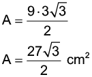

Introdução à unidade
Nesta unidade são retomados os conceitos de medidas de superfícies, como o cálculo da área do quadrado, retângulo, paralelogramo, triângulo, trapézio e losango. Também é apresentado o cálculo de áreas de regiões circulares. Por fim, apresentamos como determinar o volume de prismas e cilindros.
A seguir, relacionamos os objetivos que se pretende atingir ao estudar os conceitos desta unidade.
Capítulo 1 – Área de polígonos
Objetivos:
Capítulo 2 – Área de regiões circulares
Objetivo:
Capítulo 3 – Volume de prismas e cilindros
Objetivo:
Probabilidade e Estatística – Eventos independentes e eventos dependentes
Objetivo:
Orientações específicas
No início da unidade é proposta uma discussão sobre o cálculo do Imposto Predial Territorial Urbano (IPTU). Esse imposto anual incide sobre terrenos e edificações e seu valor varia de acordo com uma série de fatores. Os alunos poderão verificar o valor do IPTU da residência onde moram.
Sugira aos alunos que consultem o carnê de IPTU da casa em que moram para verificar as informações que ele contém. Estabeleça uma discussão sobre os diferentes preços cobrados na região e peça a eles que verifiquem quais são as alíquotas cobradas em sua cidade. Ressalte o fato de a área de cada residência e a sua localização influenciarem no valor do IPTU.
Caso haja discussões sobre o uso devido dos recursos desse imposto, sugira a leitura desse estudo:
|
Principais habilidades da BNCC |
EF09MA01, EF09MA16, EF09MA19 |
|
Competências |
CE3, CG4, CG5, CG9 |
Retomamos e aprofundamos o cálculo de área de polígonos. Nas atividades propostas, as resoluções envolvem, além dos conceitos de área, outros aprendidos neste volume, como relações trigonométricas no triângulo retângulo e num triângulo qualquer.
Para algumas atividades de cálculo de áreas de polígono, há mais de uma forma de resolução. Estimule os alunos a utilizarem diferentes possibilidades de resolução para um mesmo problema. Seria interessante que tais procedimentos fossem discutidos em classe.
Encontre soluções
Atividade 1
Área da chácara = 90 ∙ 110 =
= 9 900 m².
1 hectare tem 10 000 m² é vale R$ 30.000,00.
30 000 : 10 000 = 3
Cada m² vale R$ 3,00.
Preço da chácara = 9 900 ∙ 3.
Preço da chácara é R$ 29.700,00.
Atividade 2

A = 8²
A = 64 m²
Perímetro = 3 + 3 + 3 + 3 =
= 12 cm
Área = 3² = 9 cm²
Atividade 3
Perímetro de cada retângulo:
2x + 2y = 60
x + y = 30
Medida do lado do quadrado:
x + y
Área do quadrado:
A = (x + y)² = 30² = 900 cm²
Atividade 4
Perímetro:
2x + 2y = 26
x + y = 13
Área:
xy = 36
y = 13 - x
x(13 - x) = 36
13x - x² = 36
x² - 13x + 36 = 0
x’ = 9 ou x” = 4
Resposta: 9 cm e 4 cm.
Atividade 5
Determinando a medida desconhecido do lado do retângulo que tem a mesma medida dos lados dos quadrados:
x = 30 cm
Área total:
A = 3 ∙ 30 ∙ 30 ∙ 1,7 + 2 ∙ 900
A = 4 590 + 1 800
A = 6 390 cm²
Atividade 6
Medida do lado do terreno:
Medida do lado da casa:
Perímetro da casa =
= 19 + 19 + 19 + 19 = 76 m
Atividade 7
Área total de retângulo =
= 12 ∙ 16 = 192 cm²
Área do losango =
Atividade 8
D = 32 cm
Atividade 9
102 = h2 + 62
h = 8 m
A = 112 m2
Preço total:
112 ∙ 4 = R$ 448,00
Atividade 10
152 = h2 + 92
h = 12 cm
A = 198 cm2
Atividade 11
A = 108 cm²
b = h + 4
B = b + 16 = h + 4 + 16 = h + 20
216 = (2h + 24) ∙ h
216 = 2h² + 24h
2h² + 24h - 216 = 0
h² + 12h - 108 = 0
h’ = 6 ou h” = -12 (não convém)
Determinando as medidas dos lados não paralelos:
x² = 36 + 64
x² = 100
x = 10 ou x = -10 (não convém)
Determinando o perímetro:
p = 26 + 10 + 10 + 10 = 56 cm
Atividade 12
Área retângulo = 8 ∙ 2 = 16 cm²
Área do retângulo é igual ao do quadrado, assim, determinando a medida do lado do quadrado:
Perímetro do quadrado:
p = 4 + 4 + 4 + 4 = 16 cm
Atividade 13
Determinando a altura do paralelogramo:
h = 10 cm
A = 25 ∙ 10 = 250 cm²
Atividade 14
A = 72 cm²
D = 16 cm
d = ?
d = 9 cm
Atividade 15
A superfície do cubo é composta por 6 quadrados cujos lados medem 5 cm. Assim:
A = 6 ∙ 5² = 6 ∙ 25 = 150 cm²
Atividade 16
AB = 8 cm; CD = 2 cm e
Atividade 17
Pela simetria da figura, vemos que para cada região sombreada existe uma igual em branco. Logo, a parte sombreada tem metade da área do retângulo.
Atividade 18
A área pedida é igual à área do polígono ABCDEF menos a soma das áreas dos triângulos retângulos AEF e DEG. A área do triângulo AEF é = = 3 cm2. Vamos agora calcular a área do triângulo DEG. Para calcular DE prolongamos EF até o ponto H, obtendo assim os retângulos ABHF e CDEH. Como os lados opostos de um retângulo são iguais, segue que DE = CH = CB - BH = 6 - AF = 6 - 3 = 3. Como os lados AF e DE são paralelos, então EÂF = GÊD. Além disso AF = ED, logo os triângulos AEF e DEG são congruentes (caso ALA) e portanto, têm a mesma área. A área do retângulo ABHF é AD × AF = 8 × 3 = 24 cm2, e a do retângulo CDEH é DE × CD = 3 × (AB - EF) = 3 × (8 - 2) = 18 cm2 . Portanto a área procurada é
24 + 18 - 2 × 3 = 36 cm2. Alternativamente, a área do trapézio ABCG cuja altura é BC = 6 e cuja as bases são AB = 8 e CG = CD - GD = 6 - 2 = 4 pode ser calculada diretamente. Portanto a área é 6 = 36 cm2.

Encontre soluções
Atividade 1
5² = h² + 3²
h² = 25 - 9
h² = 16
h = 4 cm
Determinando a área:
h = 6 cm
Determinando a área:
 2
2
Atividade 2
Área do ∆OBD:
Área do quadrado ABCD:
A = 6² = 36 cm²
Área da região pintada:
A = 36 - 9 = 27 cm²
Atividade 3
8² = h² + 4²
h² = 64 - 16
h² = 48
Atividade 4
Diagonal de um quadrado de lado
que mede 8 cm é cm.
Lado do triângulo = cm

Atividade 5
Determinando a medida de :
Determinando a área:

Atividade 6
Determinando as hipotenusas dos triângulos:
18 : 3 = 6 cm
Os catetos têm medidas iguais:
6² = x² + x²
2x² = 36
x² = 18
São 6 triângulos que compõem a figura. Determinando a área:
Atividade 7
Atividade 8
x2 = (x - 8 )2 + (x - 1)2
x2 = x2 - 16x + 64 + x2 - 2x + 1
x2 - 18x + 65 = 0
x = 13 ou x = 5 (não serve)
Atividade 9
A área do triângulo BEF é e a área do retângulo ABCD é AB ∙ CB = 6 ∙ 4 = 24 cm². Logo, a área da parte sombreada é do retângulo
ABCD − área do triângulo BEF = 24 − 6 = 18 cm².
|
Principais habilidades da BNCC |
EF09MA03, EF09MA11 |
|
Competências |
CE3, CE5, CE8, CG9 |
Para o estudo de áreas de regiões circulares, iniciamos relembrando o cálculo do comprimento da circunferência bem como a definição de circunferência e círculo. Neste momento, será utilizado o número irracional π para compor a fórmula de área do círculo, bem como da área da coroa circular e setor circular.

Se possível, apresente o seguinte vídeo aos alunos “Demonstração da área do círculo” duração 11:44. Disponível em:
https://www.youtube.com/watch?v=q-S7m7yGB6Y. Acesso em: 14 jul. 2022.
Nele é apresentado o método conhecido como “exaustão”, que consiste em dividir em infinitas partes e adicionar essas partes.
De acordo com Walle (2009):
A meta de longo prazo para o cálculo estimado é ser capaz de produzir um resultado aproximado rapidamente para um cálculo que seja adequado à situação. Na vida diária, as habilidades de estimativa poupam um tempo valioso. Muitas situações não exigem uma resposta exata, portanto, usar uma calculadora ou lápis e papel não são necessários, se você tem boas habilidades de estimativa.
Isolado, o termo estimar se refere a um número que é uma aproximação adequada para um número exato dado o contexto particular. Esse conceito de estimativa é aplicado não apenas ao cálculo, mas também às medidas e quantidades.
Para nos auxiliar a realizar uma estimativa podemos arredondar os valores que estão envolvidos na situação apresentada. Porém para realizar esses arredondamentos alguns critérios devem ser seguidos, desta forma o valor estimado estará próximo do valor real. Neste momento vamos abordar como realizar estes arredondamentos. Estimule os alunos a realizar os cálculos mentalmente aplicando os critérios de arredondamentos que serão estudados. Proponha outras situações do contexto da sua comunidade em que os alunos possam utilizar as estratégias estudadas para realizar estimativas.
Encontre soluções
Atividade 1
AC =r2
AC = 3,14 ∙ 3,24
AC = 10,1736 m2
Atividade 2
AC =3,14 · 16
AC = 50,24 cm2
Abranca = Apreta = 25,12 cm2
Acircular = (3,14 ∙ 22) : 2 = 6,28 cm2
Acolorida = 16 - 6,28 = 9,72 cm2
A1 = 3,14 · 36
A1 = 113,04 cm2
A2 = 3,14 · 9
A2 = 28,26 cm2
A = A1 − A2 = 113,04 - 28,26 =
= 84,78 cm2
Asemicírculos = 3,14 ∙ 22 = 12,56 cm2
Acolorida = 28 - 12,56 = 15,44 cm2
Atividade 3
AQ = 82
AQ = 64 m2
AC = r2
AC = 3,14 · 16
AC = 50,24 m2
Apiso = 64 - 50,24
Apiso = 13,76 m2

Atividade 4
AC = 3,14 · 4
AC = 12,56 cm2
AR = 4 · 15
AR = 60 cm2
Acolorida = 60 - 12,56
Acolorida = 47,44 cm2
Atividade 5
AC = 3,14 · 144
AC = 452,16 cm2
Afatia = 452,16 : 8 = 56,52 cm2
Atividade 6
Ac = 3,14 · 62
Ac = 113,04 cm2
Asetor = 18,84 cm2
A = 150,72 cm²
Atividade 7
AC =3,14 · 25
AC = 78,5 cm2
C = 2pr
C = 2 · 3,14 · 5
C = 31,4 cm
AR = 31,4 · 10
AR = 314 cm2
AT = 2 · 78,5 + 314
AT = 471 cm2
Atividade 8
Área do chafariz:
Área total:
Área da calçada: Área total - Área do chafariz
Área da calçada: 452,16 - 314 =
= 138,16 m2
|
Principais habilidades da BNCC |
EF09MA04, EF09MA19, EF09MA20 |
|
Competências |
CE2, CE6, CE8, CG9 |
Neste capítulo iremos retomar o estudo de volumes e ampliar para prismas e cilindros. Na proposta inicial abordamos o quebra-cabeças Cubo Mágico como recurso para o cálculo de volume. Depois o estudo do favo de mel como situação real da natureza para que percebam a presença da matemática na natureza. Além desse trabalho geométrico, proponha aos alunos uma pesquisa sobre os benefícios do mel e de uma alimentação saudável. Ao final, mostre que o bloco retangular e o cubo são casos particulares de prismas. Comente com os alunos que a fórmula é válida tanto para prismas retos quanto para prismas oblíquos.
Encontre soluções
Atividade 2
2m = 20 dm
80cm = 8 dm
50 cm = 5 dm
V = 20 ∙ 8 ∙ 5 = 800 dm³
Determinando quantos litros sobraram: 800/4 = 200 - 30 litros = 170 litros.
Atividade 4
O paralelepípedo B é formado por vários cubos A. Para calcularmos a quantidade de cubos A, temos que contar quantos cubos existem no comprimento, na largura e na altura de B. Depois, basta multiplicarmos esses valores.
O paralelepípedo B tem:
5 cubos no comprimento, 3 na largura e 4 na altura.
Logo, ele possui:
5 × 3 × 4 = 60
Atividade 5
A área da base, que no caso de um triangulo retângulo é a multiplicação dos catetos sobre 2:
Como o volume é a área da base vezes altura, então:
V = Ab ∙ h
10 = 6 × h h = 3
Assim, podemos encontrar a área lateral, pois ela é a soma dos 3 retângulos laterais, uma para cada lado do triângulo da base e nos casos deste triângulo de base ele tem lados 3, 4 e 5 metros (pois é um triângulo retângulo do tipo 3, 4 e 5), então a área lateral é:
A = 3 ∙ 3 + 3 ∙ 4 + 3 ∙ 5
A = 9 + 12 + 15
A = 36
Agora, basta adicionar a área lateral com 2 vezes a área da base:
A = 36 + 2 × 6
A = 48
Quando a área da base e a altura de um prisma e a área da base e a altura do cilindro forem as mesmas, eles apresentarão também o mesmo volume, ainda que sejam sólidos geométricos com formatos diferentes.
Como a base de um cilindro é igual a um círculo, a partir do princípio de Cavalieri, é possível deduzir a fórmula do volume do cilindro, pois a área do círculo é Ab = πr². Sendo assim, para calcular o volume do prisma, utilizamos a fórmula:
V = πr² × h
OLIVEIRA, Raul Rodrigues de. Princípio de Cavalieri. Brasil Escola. Disponível em: https://brasilescola.uol.com.br/matematica/principio-cavalieri.htm. Acesso em: 12 jul. 2022.
Espera-se que os alunos digam que precisam determinar a área da base e multiplicar pela altura do cilindro, assim como nos prismas. Ainda, relacionar que a medida de volume 1 dm³ é capaz de armazenar 1 litro de líquido.

Encontre soluções
Atividade 1
Como o diâmetro é de 10 cm, temos que o raio é de 5 cm e considerando π = 3,14.
Logo: V = 3,14 ∙ 5² ∙ 15 ≈ 1,1775, ou seja, aproximadamente
1 177 mL.
Atividade 2
O volume é dado por altura x área da base.
Ele tem h = 18 m = 180 dm e a área da base é dada por
A = π x r², A = 3,14r²
V = 180 × 3,14r²
7 500 000 = 180 × 3,14r²
R ≈ 115 dm = 11,5 m
Probabilidade e estatística – Eventos independentes e eventos dependentes
Inicie este conteúdo mencionando alguns exemplos de situações reais em que podemos identificar a probabilidade equiprovável para os alunos e solicite que eles deem outros exemplos. Revise a definição de probabilidade e os termos utilizados como: espaço amostral, evento equiprovável e experimento aleatório. Depois, explique a diferença entre os eventos dependentes e independentes. Se julgar necessário, retome o conceito de probabilidade de um evento independente utilizando exemplos. Aproveite para falar sobre a importância de conferir o resultado encontrado na resolução de problemas. Por exemplo, que a soma das probabilidades é 1.
Relembre
Atividade 1
A planta da área da cidade pesou 40 g. A praça tem dimensões 100 m por
100 m. A área é de 10 000m2 e o recorte da planta pesou 0,08 g.
Assim:
A = 5 000 000 m²
Atividade 2
Salário no primeiro mês:
R$ 300,00 + R$ 0,50 ∙ 500 ∙ 1,40 =
= R$ 300,00 + R$ 350,00 =
= R$ 650,00
Salário no segundo mês:
R$ 300,00 + R$ 0,50 ∙ 2 ∙ (500 ∙ 1,40) = R$ 300,00 + R$ 700,00 =
= R$ 1.000,00
Atividade 3
Determinando a medida representada por x:
5² = x² + 3²
x = 4
Área da figura I:
AI = 3² = 9 cm²
Área da figura II:
AII = 3² = 9 cm²
Área da figura III:
Área da figura IV:
Área total:
At = 9 + 9 + 6 + 2,5 = 26,5 cm²
Atividade 4
Os raios das tampas grandes, médias e pequenas são, respectivamente, 1 m,  m
m
e m.
Em metros quadrados, as sobras AI, AII e AIII das tampas grandes, médias e pequenas são, respectivamente, tais que:
AI = AII = AIII
As três entidades recebem quantidades iguais de material.
Atividade 5
A área das três figuras é a mesma e todas são iguais à área de um quadrado de lado  cm.
cm.
Área = .
Atividade 6
Área do quadrado = 6² = 36 cm²
Área do triângulo = 0,2 ∙ 36 = 7,2 cm²
Determinando o valor de x:
6x = 14,4
x = 2,4
Atividade 7
Medida do lado do hexágono é igual à medida do raio da circunferência em que ele está inscrito.
Área do círculo =
Atividade 8
Como é a altura realtiva a hipotenusa, usamos as relações trigonométricas no triângulo retângulo ABD:
AB² = AD ∙ AC
4² = 5 ∙ (2R1)
R1 =
BD² = AD ∙ CD
3² = 5 ∙ (2R2)
R2 =
Sendo r o raio do semicírculo maior, temos:
Área sombreada:
Atividade 9
O quadrado ABCD tem lado igual a 6 cm. A área do quadrado menor é da área do quadrado maior. Portanto sua área é igual a 9 cm2.
Atividade 10
O eixo y divide o quadrilátero em dois triângulos: I e II.
Atividade 11
A figura é composta por um triângulo e por um quadrilátero:
Área do triângulo:
Área do retângulo:
AII = 10 ∙ 4 = 40 m²
Área total da figura:
A = 10 + 40 = 50 m²
Determinando a quantidade, em litros, de tinta necessária para pintar:
Determinando a quantidade de latas:
5,6 : 2 = 2,8 latas
Devem ser compradas 3 latas.
Atividade 12
Ao formar o quadrilátero dentro do retângulo, resultaram dois triângulos retângulos: I e II.
Área do retângulo é 48.
O comprimento do retângulo é 4x e a altura é 3x.
4x ∙ 3x = 48
12x² = 48
x² = 4
x = 2
Área o triângulo I:
Área o triângulo II:
Área do quadrilátero:
A = 48 - (18 + 8)
A = 48 - 26
A = 22
Atividade 13
Área A: 10x
Área B: 5 ∙ 15 = 75 m2
Perímetro A: 10 + 12 + 10 + 12 = 44 m
Perímetro B: 15 + 15 + 5 + 5 = 40 m
Soma dos perímetros: 84 m